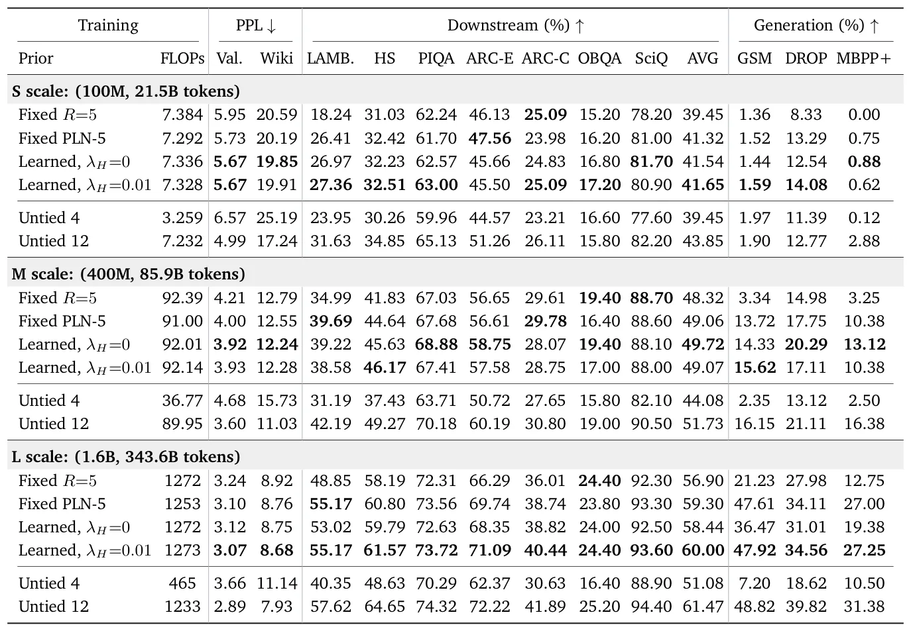
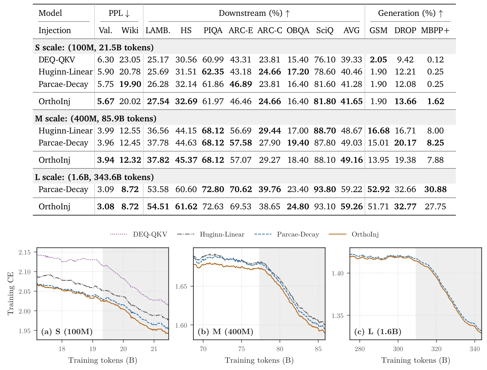
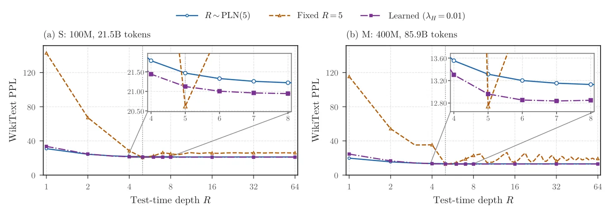

O problema: recorrência sai cara em todas as etapas
Modelos de linguagem com loop (looped language models) reutilizam o mesmo bloco de camadas várias vezes, como se fossem redes recorrentes. A cada recorrência, o estado passa pelo mesmo conjunto de pesos. Essa arquitetura promete economizar parâmetros, mas na prática cada repetição adiciona custo: mais ativações para guardar no treino, mais chaves e valores (KV) no cache durante decodificação, mais computação no prefill de cada prompt e mais replay de trajetórias no reinforcement learning.
Existem duas escolas de pensamento. Uma treina modelos com poucas recorrências fixas, como o Ouro, que usa quatro loops. Outra, representada pelo Huginn, treina para muitas recorrências e busca que os estados convirjam para pontos fixos — configurações onde aplicar o bloco mais uma vez não muda quase nada. Este paper, parte II de uma série sobre modelos recorrentes, argumenta que pontos fixos bem formados são a chave para desbloquear ganhos de eficiência em todas as fases: treino, inferência e pós-treino.
A intuição é simples. A equação de ponto fixo z* = F(z*; x) envolve apenas o estado final, não o caminho até ele. Se os estados de fato convergem, o endpoint pode substituir a trajetória inteira. Isso abre quatro atalhos: backpropagation truncada no treino, compartilhamento de KV terminal na decodificação, destilação de um modelo rápido para prefill e reutilização de estados salvos no RL. Cada atalho remove um custo que cresce com a profundidade, então os ganhos aumentam a cada loop adicionado.
Evidência empírica: Huginn converge, Ouro não
Para testar se pontos fixos importam, os autores aplicam compartilhamento de KV terminal: em vez de cachear as chaves e valores de cada token em cada recorrência, guardam apenas o estado final de cada token do prefixo. No Huginn, essa mudança quase não afeta a acurácia em GSM8K (tarefa de matemática). No Ouro, com quatro loops, a acurácia desaba. A diferença rastreia a convergência: os estados do Huginn se aproximam de pontos fixos; os do Ouro, não.
Essa observação valida a hipótese central. Se o modelo converge, o KV terminal carrega praticamente toda a informação do contexto. Se não converge, cada iteração intermediária contribui de forma distinta e descartar essas contribuições quebra a predição. O mesmo raciocínio se aplica aos outros atalhos: backpropagation truncada aproxima o gradiente de equilíbrio sem warm-up; destilação de prefill substitui os loops por uma rede direta que prevê o ponto fixo; e RL pode pontuar rollouts a partir de estados salvos, sem replay.
Dois componentes moldam os pontos fixos
Para que esses atalhos funcionem, o treino precisa moldar pontos fixos que sejam ao mesmo tempo estáveis e informativos. Dois componentes do treino controlam isso: a distribuição de profundidades (depth prior) e o esquema de injeção de entrada (input injection).
O depth prior decide em quantas recorrências cada token é treinado. Tokens diferentes convergem em profundidades diferentes. Se você treina sempre na mesma profundidade fixa, o modelo aprende a prever bem naquela profundidade, mas quebra o compartilhamento de KV: ao forçar KV terminal, a acurácia despenca. O Huginn usa uma distribuição fixa e ampla (Poisson log-normal), que suporta compartilhamento mas dilui a supervisão na profundidade-alvo mais do que o necessário.
Os autores propõem aprender o prior a partir do feedback de predição: profundidades que predizem bem recebem mais peso. Para evitar que o prior colapse em uma única profundidade, adicionam um termo de entropia que mantém a distribuição suficientemente ampla. Dessa forma, o modelo recebe supervisão concentrada onde ela é útil, mas ainda vê diversidade de profundidades suficiente para suportar compartilhamento de KV.
O segundo componente é a injeção de entrada. A cada recorrência, o modelo adiciona a representação de entrada x ao estado z. Esquemas existentes, incluindo o do Huginn e do Parcae, deixam a componente do estado ao longo de x sem restrição. Dependendo do sinal dessa componente, ela pode amplificar ou cancelar a injeção. Os autores introduzem injeção ortogonal (OrthoInj): antes de adicionar x, removem a projeção de z sobre x. Assim, cada recorrência recebe a entrada com a mesma intensidade, sem interferência construtiva ou destrutiva.

Configuração experimental
Os autores treinam modelos em três escalas: Small (100M parâmetros, 21.5B tokens), Medium (400M, 85.9B tokens) e Large (1.6B, 343.6B tokens). Cada modelo usa a arquitetura do Llama, com um bloco de prelúdio, um núcleo recorrente de dois blocos e um bloco de coda (layout 1+2×R+1). Com R=5 recorrências, a profundidade lógica é de 12 blocos, mas o modelo físico tem apenas 4 blocos.
Para comparação, treinam também modelos não-recorrentes: Untied 4, com 4 blocos distintos (mesma contagem de parâmetros e cache KV dos modelos recorrentes), e Untied 12, com 12 blocos distintos (mesma profundidade lógica, mas 3× mais parâmetros e cache). O treino usa uma mistura multilingual que inclui TxT360, tokenizada com Jais64k, e otimização AdamW com schedule warmup-stable-decay.
A avaliação cobre perplexidade em MixVal e WikiText-103, acurácia downstream em LAMBADA, HellaSwag, PIQA, ARC-Easy/Challenge, OpenBookQA e SciQ, e geração em GSM8K, DROP e MBPP+. Exceto quando indicado, os modelos são avaliados em R=5 com compartilhamento de KV terminal: o prefill cacheia apenas o KV final de cada token do prompt, e a decodificação procede um token por vez.
Resultados: prior aprendido supera fixo e PLN
Os autores comparam quatro configurações de depth prior, todas com profundidade média 5: treinamento de profundidade fixa (Fixed R=5), prior Poisson log-normal fixo do Huginn (Fixed PLN-5), e dois priors aprendidos, com e sem termo de entropia. Ambos os priors aprendidos partem de PLN-5 e limitam a profundidade máxima em 64.
Treinamento de profundidade fixa quebra o compartilhamento de KV. Sob KV terminal forçado, ele tem a perplexidade mais alta e perde mais da metade da acurácia em GSM8K nas escalas M e L. Para atingir seu melhor desempenho, precisa do cache KV completo. Isso confirma que treinar sempre na mesma profundidade não prepara o modelo para inferência com KV terminal.
O prior aprendido mantém o compartilhamento intacto e supera o Fixed PLN-5. Com KV terminal, ele reduz a perplexidade de validação em 0.7–1.8% em relação ao PLN fixo, ao custo de no máximo 1.6% mais FLOPs de treino. Na escala Large, o modelo com prior aprendido e entropia regularizada, usando cache KV 3× menor, iguala a média downstream do Untied 12, que tem 3× mais parâmetros e cache. Ele também supera amplamente o Untied 4, que tem a mesma contagem de parâmetros e cache.

Injeção ortogonal melhora em todas as escalas
Os autores comparam três esquemas de injeção: sem injeção (None), injeção aditiva padrão (Add, usada no Huginn) e injeção ortogonal (OrthoInj). A injeção ortogonal remove a componente do estado ao longo da entrada antes de adicionar a entrada, garantindo que cada recorrência receba o input com a mesma intensidade.
OrthoInj atinge a menor perda de treino em todas as três escalas. Na escala Large, reduz a perplexidade de validação em 1.0% em relação a Add e em 1.6% em relação a None. Os ganhos são consistentes ao longo do treino, especialmente na fase final, quando a taxa de aprendizado decai. Isso sugere que a ortogonalização estabiliza a dinâmica de convergência e permite que o modelo aproveite melhor a supervisão.

Destilação de prefill: 1.79× mais rápido
Prefill é a fase em que o modelo processa o prompt inteiro antes de gerar o primeiro token. Em modelos recorrentes, cada token do prompt passa por R recorrências, o que pode ser lento em prompts longos. Os autores treinam um modelo estudante (student) não-recorrente para prever diretamente o ponto fixo do professor (teacher) recorrente, substituindo os loops por uma passada direta.
O estudante é treinado em um quarto dos tokens de pré-treino do professor. Em prompts de 8K tokens, ele é até 1.79× mais rápido que o professor com R=5. A média downstream fica 1.0–4.5 pontos abaixo do professor, mas em latência equivalente (professor com R=2), o estudante pontua 0.5–0.9 pontos acima. Isso mostra que destilação de prefill é uma troca viável: você perde um pouco de qualidade, mas ganha bastante velocidade.
Reutilização de estados no RL: 2× mais rápido
No reinforcement learning, cada atualização requer pontuar rollouts: o modelo gera sequências e calcula recompensas. Em modelos recorrentes, isso normalmente exige replay da trajetória completa para backpropagation. Com pontos fixos, os autores salvam o estado convergido de cada rollout e computam gradientes diretamente a partir desses estados, sem replay.
Esse atalho reduz pela metade o tempo de pontuação e backward de cada atualização de RL, em comparação com replay completo dos loops. A economia vem de evitar recomputar as recorrências: o estado salvo já carrega a informação necessária. Isso torna o RL com modelos recorrentes tão rápido quanto com modelos não-recorrentes de mesma profundidade lógica.

O que o paper não mostra
Os experimentos cobrem apenas três escalas, até 1.6B parâmetros. Não sabemos se os ganhos se mantêm em modelos maiores, de dezenas de bilhões de parâmetros, onde a dinâmica de convergência pode mudar. O paper também não explora o comportamento em tarefas de geração longa ou diálogos multi-turno, onde a estabilidade dos pontos fixos ao longo de muitas gerações seria crítica.
A destilação de prefill usa um quarto dos tokens de pré-treino, mas não há ablação sistemática sobre quantos tokens são necessários para diferentes níveis de qualidade. Além disso, o estudante é treinado para prever o ponto fixo do professor em R=5; não está claro se ele generalizaria bem caso o professor fosse treinado para profundidades maiores.
O paper não compara com outras arquiteturas recorrentes recentes, como SSMs (state space models) ou variantes de Mamba, que também prometem eficiência. Também não há análise de custo de memória durante o treino: embora a backpropagation truncada reduza ativações armazenadas, o impacto exato em pico de memória não é quantificado.
Por fim, o prior aprendido adiciona um hiperparâmetro (o peso do termo de entropia) que precisa ser ajustado. O paper não fornece diretrizes sobre como escolher esse peso em novos cenários, o que pode dificultar a reprodução dos resultados em datasets ou escalas diferentes.
Por que isso importa
Modelos recorrentes prometem economizar parâmetros, mas até agora cada recorrência adicionava custo linear em treino, inferência e pós-treino. Este paper mostra que treinar para pontos fixos quebra essa linearidade: os atalhos habilitados por convergência tornam cada loop adicional muito mais barato. Backpropagation truncada, compartilhamento de KV terminal, destilação de prefill e reutilização de estados no RL são todos consequências diretas de uma única propriedade — estados que convergem.
A contribuição metodológica está em identificar e corrigir os dois componentes que moldam esses pontos fixos. Prior aprendido com entropia regularizada concentra supervisão onde ela é útil, mas mantém amplitude suficiente para suportar compartilhamento. Injeção ortogonal estabiliza a dinâmica de recorrência, garantindo que a entrada seja recebida com intensidade constante a cada loop.
Os resultados empíricos validam a abordagem: na escala de 1.6B, o modelo recorrente com prior aprendido e cache 3× menor iguala um modelo não-recorrente 3× maior. Destilação de prefill acelera em até 1.79× com perda controlada de qualidade. RL fica 2× mais rápido. Esses ganhos crescem com a profundidade, então modelos que precisam de muitas recorrências — por exemplo, para raciocínio complexo — se beneficiam ainda mais.
Limitações permanecem: escalas maiores não foram testadas, geração longa não foi explorada, e a comparação com SSMs ou Mamba falta. Mas a ideia central é sólida e generalizável: se você vai treinar um modelo recorrente, treine para convergir. Os atalhos que pontos fixos desbloqueiam pagam o custo de moldar esses pontos, e os ganhos aumentam a cada loop que você adiciona.
O que fica
- Treinar modelos recorrentes para convergir a pontos fixos permite cortar o cache KV em 3×, acelerar prefill em 1.79× e reduzir pela metade o tempo de RL, sem perda significativa de qualidade.
- Prior de profundidade aprendido com entropia regularizada e injeção ortogonal de entrada são as duas mudanças de treino que moldam pontos fixos estáveis e informativos.
- Na escala de 1.6B parâmetros, modelo recorrente com cache 3× menor iguala desempenho de modelo não-recorrente 3× maior, mostrando que recorrência bem treinada economiza parâmetros e memória.
Paper original: Towards Looped Models Done Right, Part II: Rethinking at Fixed Points
Comentários
Nenhum comentário ainda. Seja o primeiro.